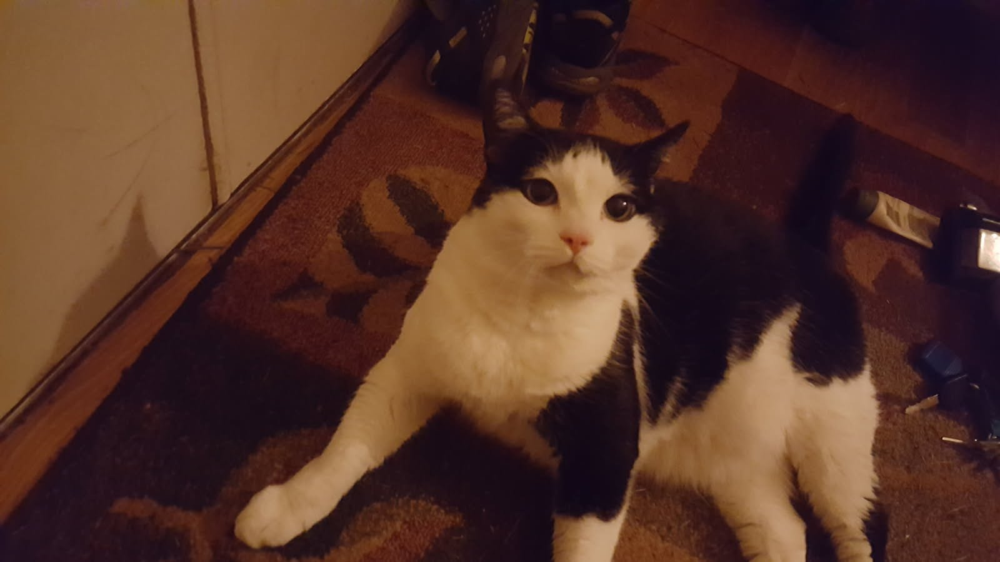

TODO
Stand up the blog in pflager.net
Show what current content exists and settle on what the original plan was.
Confirm that all the artifacts from the original plan still exist in the bc-memorial project box.
A chromium-centric file-only (server-not-needed) blog tracking the project on a long-overdue memorial for a beloved cat named BC (BiColor).
There's a meta-blog here where I track my progress on modifying/improving this blog's content.
Stand up the blog in pflager.net
Show what current content exists and settle on what the original plan was.
Confirm that all the artifacts from the original plan still exist in the bc-memorial project box.
Going through the img/ folder and taking a guess at what each file is and why it's here.
| Artifact | Description |
|---|---|
 |
Candid phone photo of BC (timestamped 2019-01-11) dozing on someone's lap next to a computer desk — one of many casual reference photos, not staged for anything. |
| BC napping face-first against a couch cushion. Another "sweet sleepy face" candidate shot. | |
 |
BC sprawled on her back on a blanket, completely conked out. A favorite goofy sleeping pose. |
 |
BC curled up asleep on a paisley bedspread next to a flea comb — looks like she'd just been groomed. |
 |
BC asleep on someone's lap at a computer desk (keyboard/mouse visible) — a "keeping me company while I work" shot. |
 |
BC curled up on the bed at night, eyes catching the camera flash. |
Close, low-light portrait of BC looking straight into the camera — the kind of shot that'd crop well into a small oval, like the cameo in drawing.svg below. |
|
 |
BC sitting alert on the hallway rug, ears up, watching whoever's holding the camera. |
 |
A simple red heart clip-art icon (the filename suggests it was pulled from a "corazón"/heart icon set) — a reusable design element for the memorial artwork. |
 |
An early, unfinished layout draft for the plaque artwork: a grey placeholder oval (for a photo), the heart icon, and a grey placeholder rectangle (for the nameplate text) — before any real photo or text was dropped in. |
 |
A more finished version of the mock-up above: a photo of BC cropped into the oval, an outlined heart, and a nameplate reading "B.C. / 2007 - 2023" — looks like the working design file for a photo memorial piece. |
 |
A small glass vial with metal end-caps, photographed outdoors on a wire grate. Guessing this is a keepsake capsule (fur, ashes, or a note) meant to be kept with the memorial. |
 |
The actual engraved metal plaque: "In loving memory of BC, 2007 - 2023" with small cat icons. This looks like the finished/ordered memorial plaque itself — simpler than the photo-based drawing.svg concept, so maybe that design got dropped in favor of this one. |
I did a .fork of https://github.com/pflagerd/blog-bootstrap